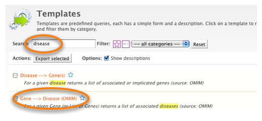
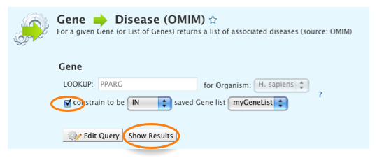

You can use Lists in any Template search, or in queries you create yourself in the QueryBuilder. As the List analysis page suggested, some of the Genes in our List are involved in lipid pathways so it might be interesting to see if any of them are linked to a Disease. metabolicMine includes human Disease / Gene relationships from OMIM. OMIM is a curated database of human Genes and Genetic disorders which we can search with one of our predefined Template searches.
Click on the Templates Tab (located on the top menu bar) and search the Templates for 'disease'. Now select the Template
'Gene --> Disease (OMIM)':
Now that we have created a list the template search gives us the option to use it instead of entering an identifier.
Click the checkbox to select the List you named earlier, and then run the search.
The results table shows the Genes from our original List that have associations with Diseases (according to the OMIM database). Using the Column Summary button on the 'Gene > Symbol' we can see that 10 of our Genes have Disease associations (Total unique values: 10).
You can also create new lists from results tables. We can save the list Disease Genes from this query to view in the List analysis page or to use in more Template searches.
Click on the checkbox by 'Gene > primaryIdentifier' to select all of the entries. Now click on the 'Create List' button (just above the primaryIdentifier column) and choose a name for the saved List. If you wanted to select a subset you can click on the individual entries. Alternatively, holding the SHIFT key and clicking will allow you to select a range of entries.
![[Save column in a List]](mmResultsPage_2.png)
Using Lists is an excellent way to retrieve information about collections of data. For example we could also retrieve:
- all the orthologues in another organism, e.g. M. musculus
- all associated SNPs
- Protein-Protein interactions for these Genes